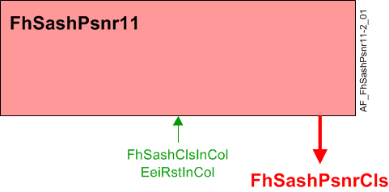

通风柜窗框定位器 (FhSashPsnr11)
Overview
应用功能》Fume hood sash positioner 11" (FhSashPsnr11）适用于通风柜窗框定位器，在特定条件触发时自动关闭垂直通风柜窗框。为了避免接近障碍物，安全装置必须由其他人提供。
输出设备是第三方提供的窗扇闭合器。没有将垂直窗扇驱动到任何其他位置的功能。无论引擎盖上有多少扇窗扇，应用程序中都只有一个窗扇闭合器 AF，并且只有一个窗扇闭合器 BO (FhSashPsnrCls）。在复杂的安装中，BO 可能连接到多个闭合器。
主要特点：
- Programmable sash closer
Function
该应用程序支持多种关闭标准。当任何关闭标准为真时，窗扇关闭对象（FhSashPsnrCls）在设定的时间内产生脉冲PulseLngtCls，关闭窗扇。它会定期重复脉冲，同时窗扇关闭标准保持不变。
持续时间FhSashPsnrCls脉冲和关闭的重复间隔命令DlyRptCls是可配置的。

| 命令或请求（或相关） |
| 条件或状态或可用性的通知 |
| 设备模式 |
| 互锁（内部信号，不是 BACnet 对象；有关其他信息，请参阅互锁部分） |


Criteria to close sash
应用程序可以配置为根据以下条件关闭窗扇：
- user pressed ‘Green Leaf’ button on ODP (if enabled in CE) - EeiRstIn = 1 (BACnet object resides in ODP)
- user pressed ‘close’ button on ODP - SashClsIn = 1 (BACnet object resides in ODP)
- fume hood user is absent (Presence sensor) – FhOcc = Unocc = 1
- fume hood mode is Off, Fire, or Emergency - FhOpMod = 1, 4, or 5
- manual command to Sash Closure multistate trigger value object - FhSashPsnrCmd = Close = 2
Configuration
 Parameters
Parameters
描述 | 范围 | 默认值 |
|---|---|---|
Pulse length for close | PulseLngtCls | 1 [s] |
Delay before repeat close | DlyRptCls | 120 [min] |
Enable close with reset of energy efficiency 0:No | EnClsEeiRst | 0:No |
Interface
界面 | 描述 | 类型 | 参考号 | 拥有者 | |
|---|---|---|---|---|---|
FhSashPsnrCls | Fume hood sash positioner close 0:Normal | BO | ◉ | Room segment / Field device | |
FhSashPsnrCmd | Fume hood sash positioner command 0:Ready | MTrigVal | ● | - | |
FhSashClsInCol | Collection of fume hood sash close input | ColView | ● | - | |
| FhSashClsInRs | Result of fume hood sash close input 0:Off | BCalcVal | ● | - |
FhSashClsIn | Fume hood sash close input 0:Off | BCalcVal | ◉ | Room segment / Field device | |
Engineering and commissioning
选修的。